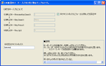
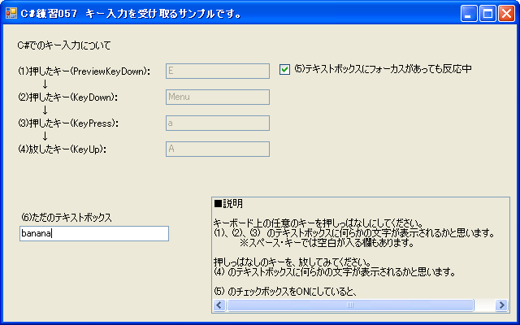

C#練習倉庫 目次へ戻る
C#練習057 キー入力を受け取るサンプルです。

Alpha、Beta、または Ver番号が新しいほど最新。.lzhファイルは、+Lhacaなどのソフトで解凍してください。
スクリーンショット

2009-11-20
鬼畜大王
C#練習057 キー入力を受け取るサンプルです。 Ver.1
キー入力を受け取ります。
テキストボックスやチェックボックスにフォーカスが当たっているときでも、
キー入力を受け取ります。
・Microsoft Visual Studio 2008 (C#)使用。
・フリーで公開しているプログラムです。
コピーして配ったり、改造してもらっても構いません。
（※修正BSDライセンスとしてください）
-------------------------------------------------------------
【起動方法】
(1) 次のファイルをダブルクリックすると始まります。
cs057_Main_KeyInput\Main_KeyInput\bin\Debug\cs057_Main_KeyInput.exe
【設定ファイル、素材、セーブファイル等の場所】
なし。
-------------------------------------------------------------
【更新履歴】
2009-11-20 ・初版。
-------------------------------------------------------------
■説明
キーボード上の任意のキーを押しっぱなしにしてください。
(1)、(2)、(3) のテキストボックスに何らかの文字が表示されるかと思います。
※スペース・キーでは空白が入る欄もあります。
押しっぱなしのキーを、放してみてください。
(4) のテキストボックスに何らかの文字が表示されるかと思います。
(5) のチェックボックスをONにしていると、
例えばテキストボックスにフォーカスが当たっていて、
テキストボックスにキー入力が送られているときでも、フォームも反応します。
OFFにしていると、
例えばテキストボックスへキー入力が送られているときは、フォームは反応しません。
■プログラム内部的な説明
(1)
テキストボックスがフォーカスを持つと、キー入力は テキストボックスに送られます。
例えば フォームが Deleteキーに反応したいときに
フォーカスがテキストボックスに当たっている場合は、
一工夫しないと フォームが Delete キーに反応しません。
フォームのPreviewKeyプロパティーを true に設定しておきます。
これで、コントロールに送られたキー入力も、フォームに送られます。
(2)
チェックボックスがフォーカスを持つと、キー入力は チェックボックスに送られます。
例えば フォームが Deleteキーに反応したいときに
フォーカスがチェックボックスに当たっている場合は、
一工夫しないと フォームが Delete キーに反応しません。
チェックボックスのチェックが変更されたときに、
FormのActivateControlプロパティーをnullに設定します。
これで、フォームにフォーカスが戻ります。
チェックボックスにフォーカスが移った場合は、
フォームにキー入力を送るためには
一度フォームにフォーカスを戻さなければなりません。
FormのFocusプロパティーやActivateプロパティーでは、
ここで想定している効果にならないようです。
以上
-------------------------------------------------------------
【ファイル構成】
主なもの
(1)起動アプリケーション
・cs057_Main_KeyInput\Main_KeyInput\bin\Debug\cs057_Main_KeyInput.exe
-------------------------------------------------------------
【C#プログラマーに向けての説明】
参照の関連図は以下の通り。
(1)cs057_Main_KeyInput
└なし
-------------------------------------------------------------
以上
2009-11-19
鬼畜大王
開発の動向